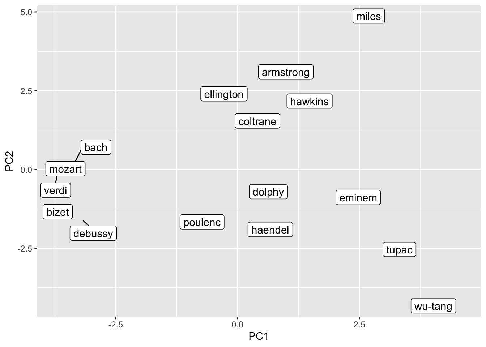
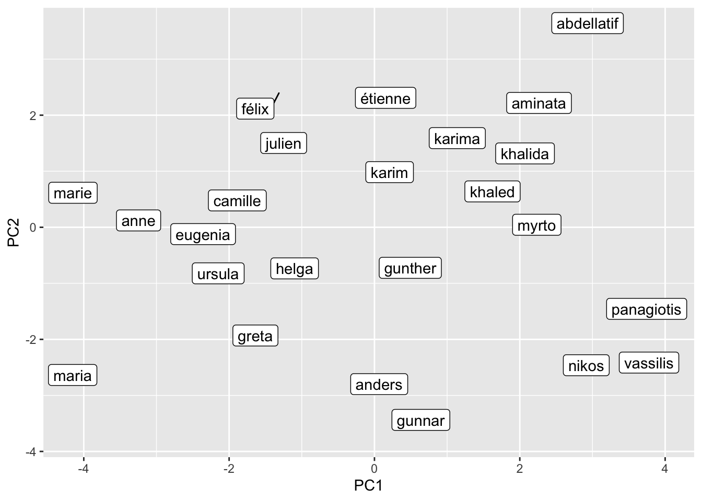
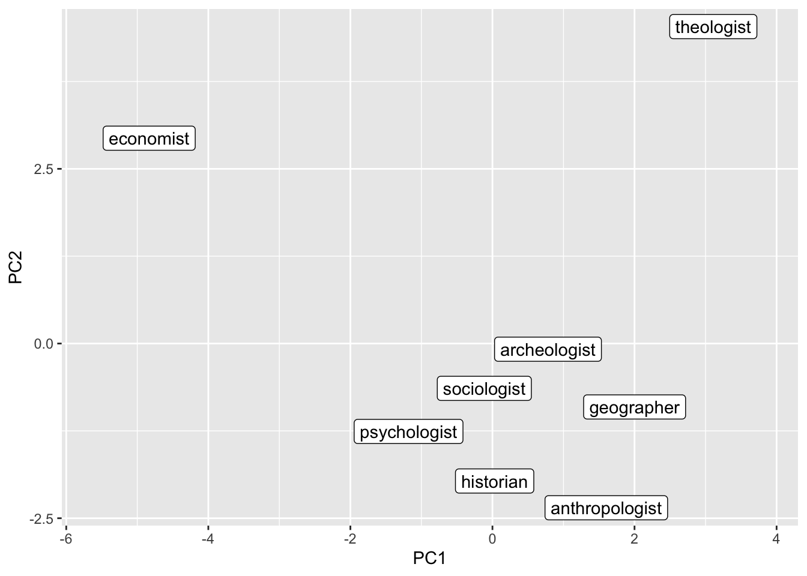
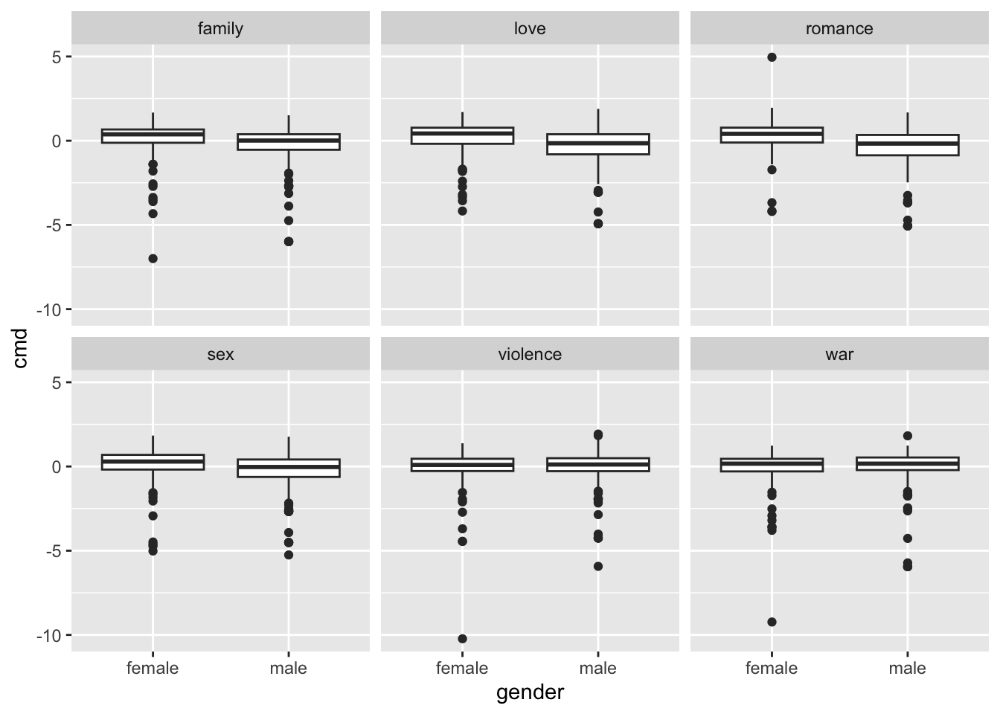
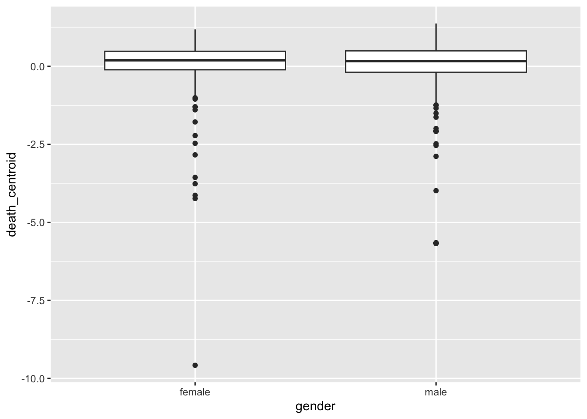
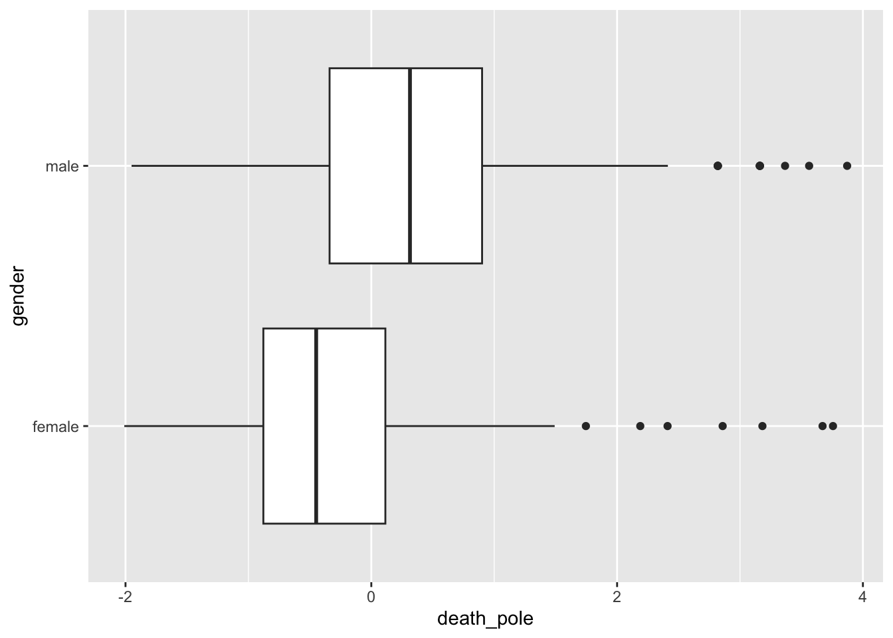

Chapter 16: Word Embeddings
Word embeddings are a fairly new technique that have massively contributed to the progress the field of NLP has made over the last years. Their idea is basically that words can be embedded in a vector space in such a way that their real-life relationships are retained. This means for instance that words that co-appear in similar contexts are more similar – or have greater cosine similarity – than the ones that don’t. Also synonyms will be very similar.
These operations typically rely on some measure of similarity. This will be the first part of this script. Then, we move on to investigating biases in pre-trained embeddings. However, sometimes we would also like to embed our own corpus so that we can investigate corpus-specific biases. Finally, you will learn how to use Concept Mover’s Distance (Stoltz and Taylor 2019), a technique that can be used to check for concept engagement of documents.
We will be using Dustin Stoltz and Marshall Taylor’s excellent text2map package. Their work has significantly altered the way I think about these techniques.
Similarity
The document-term matrix allows us to gage how similar documents are. Generally speaking, documents that have more word overlap are deemed more similar. One way to do this is Euclidean distance. Given two document vectors \(u\) and \(v\), the formula is as follows: \[d(\mathbf{u}, \mathbf{v}) = \sqrt{\sum_{i=1}^{n} (u_i - v_i)^2}\]. This is implemented in the stats package that is already preinstalled and -loaded.
However, one particular shortcoming is that it is sensitive to document length. Cosine similarity is not, as it is standardized by the magnitude of the vectors. Its formula is \[\text{cosine similarity}(\mathbf{u}, \mathbf{v}) = \frac{\mathbf{u} \cdot \mathbf{v}}{\|\mathbf{u}\| \|\mathbf{v}\|}\]. The text2map package provides the handy doc_similarity() function to compares the similarity of all documents within one document-term-matrix.
needs(sotu, tidytext, text2map, tidyverse, text2vec)
sotus <- sotu_meta |> mutate(text = sotu_text)
sotu_dtm <- sotus |>
unnest_tokens(token, text) |>
count(year, token) |>
cast_dtm(year, token, n)
euclidean_sotu <- dist(sotu_dtm, method = "euclidean") |>
as.matrix() |>
as_tibble() %>%
mutate(., from = colnames(x = .)) |>
pivot_longer(-from, names_to = "to", values_to = "euclidean_dist") |>
mutate(filter_var = map2_chr(from, to, \(x, y) toString(sort(c(x, y))))) |>
distinct(filter_var, .keep_all = TRUE) %>%
select(-filter_var) |>
filter(from != to)
euclidean_sotu |>
mutate(year_diff = (as.numeric(from)-as.numeric(to)) |> abs()) |>
lm(euclidean_dist ~ year_diff, data = _) |>
summary()
Call:
lm(formula = euclidean_dist ~ year_diff, data = mutate(euclidean_sotu,
year_diff = abs((as.numeric(from) - as.numeric(to)))))
Residuals:
Min 1Q Median 3Q Max
-859.7 -596.1 -208.6 370.3 2918.2
Coefficients:
Estimate Std. Error t value Pr(>|t|)
(Intercept) 901.5503 8.0191 112.426 < 2e-16 ***
year_diff 0.3086 0.0847 3.644 0.000269 ***
---
Signif. codes: 0 '***' 0.001 '**' 0.01 '*' 0.05 '.' 0.1 ' ' 1
Residual standard error: 744.8 on 26104 degrees of freedom
Multiple R-squared: 0.0005083, Adjusted R-squared: 0.00047
F-statistic: 13.28 on 1 and 26104 DF, p-value: 0.0002694cosine_sotu <- doc_similarity(sotu_dtm, method = "cosine") |>
as.matrix() |>
as_tibble() %>%
mutate(., from = colnames(x = .)) |>
pivot_longer(-from, names_to = "to", values_to = "cosine_sim") |>
mutate(filter_var = map2_chr(from, to, \(x, y) toString(sort(c(x, y))))) |>
distinct(filter_var, .keep_all = TRUE) %>%
select(-filter_var) |>
filter(from != to)
cosine_sotu |>
mutate(year_diff = (as.numeric(from)-as.numeric(to)) |> abs()) |>
lm(cosine_sim ~ year_diff, data = _) |>
summary()
Call:
lm(formula = cosine_sim ~ year_diff, data = mutate(cosine_sotu,
year_diff = abs((as.numeric(from) - as.numeric(to)))))
Residuals:
Min 1Q Median 3Q Max
-0.16931 -0.02171 0.00586 0.02691 0.08186
Coefficients:
Estimate Std. Error t value Pr(>|t|)
(Intercept) 9.785e-01 3.972e-04 2463.5 <2e-16 ***
year_diff -6.143e-04 4.195e-06 -146.4 <2e-16 ***
---
Signif. codes: 0 '***' 0.001 '**' 0.01 '*' 0.05 '.' 0.1 ' ' 1
Residual standard error: 0.03689 on 26104 degrees of freedom
Multiple R-squared: 0.451, Adjusted R-squared: 0.4509
F-statistic: 2.144e+04 on 1 and 26104 DF, p-value: < 2.2e-16The regressions unveil that the closer in time two speeches were held, the more similar they were. (NB: larger euclidean distance == less similar; larger cosine similarity == more similar).
Vector Algebra with pre-trained models
Word similarities
Now we move on to some analyses of pretrained models. These were trained on ginormous amounts of text. We can use them to check out all things related to similarity of words: we can look for synonyms, investigate their relationships, and also visualize these quite conveniently by harnessing the power of dimensionality reduction.
Here, we will operate on the matrix as this is considerably faster than working with tibbles and dplyr functions. Luckily, the text2map package comes with some convenient wrappers. For this, we first need to download the embeddings. We can use the text2map.pretrained package for this
#remotes::install_gitlab("culturalcartography/text2map.pretrained")
needs(text2map.pretrained)
#download_pretrained("vecs_glove300_wiki_gigaword") ## needs to be downloaded first
data("vecs_glove300_wiki_gigaword")
# it is a wordy, descriptive name, so you can rename it
glove_wiki <- vecs_glove300_wiki_gigaword
rm(vecs_glove300_wiki_gigaword)In a first task, we want to extract the best matches for a given word. Hence, we need to write code that first calculates the cosine similarities of our term with all other terms and then extracts the ones that actually have the highest cosine similarity.
Let’s check out some matches:
cos_sim <- sim2(
x = glove_wiki,
y = glove_wiki["sociology", , drop = FALSE],
method = "cosine"
) |>
enframe(name = "token", value = "cosine_sim") |>
mutate(cosine_sim = cosine_sim[,1]) |>
arrange(-cosine_sim) |>
slice_max(cosine_sim, n = 10)
cos_sim# A tibble: 10 × 2
token cosine_sim
<chr> <dbl>
1 sociology 1.00
2 anthropology 0.824
3 psychology 0.795
4 criminology 0.717
5 linguistics 0.695
6 professor 0.695
7 ph.d. 0.662
8 doctorate 0.651
9 phd 0.650
10 economics 0.637We can also adapt the function to do some semantic algebra:
\[King - Man = ? - Woman\] \[King - Man + Woman = ?\]
semantic_algebra <- function(term_1, term_2, term_3, n = 5){
search_vec <- glove_wiki[term_1, , drop = FALSE] - glove_wiki[term_2, , drop = FALSE] + glove_wiki[term_3, , drop = FALSE]
sim2(x = glove_wiki, y = search_vec, method = "cosine") |>
enframe(name = "token", value = "cosine_sim") |>
mutate(cosine_sim = cosine_sim[,1]) |>
arrange(-cosine_sim) |>
filter(!token %in% c(term_1, term_2, term_3)) |>
slice_max(cosine_sim, n = n)
}
semantic_algebra("king", "man", "woman")# A tibble: 5 × 2
token cosine_sim
<chr> <dbl>
1 queen 0.690
2 monarch 0.558
3 throne 0.557
4 princess 0.552
5 mother 0.514semantic_algebra("france", "paris", "rome")# A tibble: 5 × 2
token cosine_sim
<chr> <dbl>
1 italy 0.762
2 spain 0.541
3 italian 0.524
4 italians 0.516
5 pope 0.485semantic_algebra("sociology", "stats", "theory")# A tibble: 5 × 2
token cosine_sim
<chr> <dbl>
1 anthropology 0.665
2 psychology 0.636
3 philosophy 0.586
4 theories 0.576
5 linguistics 0.576semantic_algebra("liberals", "money", "ecology")# A tibble: 5 × 2
token cosine_sim
<chr> <dbl>
1 ecologists 0.498
2 ecologist 0.455
3 conservatives 0.426
4 ecological 0.421
5 progressives 0.416semantic_algebra("christmas", "santa", "bunny")# A tibble: 5 × 2
token cosine_sim
<chr> <dbl>
1 bugs 0.460
2 easter 0.456
3 bunnies 0.428
4 holiday 0.419
5 daffy 0.415semantic_algebra("christmas", "snow", "sun")# A tibble: 5 × 2
token cosine_sim
<chr> <dbl>
1 holiday 0.477
2 thanksgiving 0.409
3 eve 0.405
4 birthday 0.382
5 sunset 0.382Investigating biases
Quite in the same vein, we can also use vector algebra to investigate all different kinds of biases in language. The idea is to form certain dimensions or axes that relate to real-world spectra. Examples would be social class (“poor – rich”), gender (“male – female”), age (“young – old”).
gender <- tibble(
add = c("man", "boy", "grandfather", "gentleman", "husband"),
subtract = c("woman", "girl", "grandmother", "lady", "wife")
)
sem_dir <- get_direction(anchors = gender, wv = glove_wiki)
jobs <- c("secretary", "carpenter", "nurse", "ceo", "doctor")
job_gender_bias <- sim2(sem_dir, glove_wiki[jobs, ], method = "cosine")
bias_tbl <- tibble(direction = job_gender_bias[1, ],
term = colnames(job_gender_bias))
bias_tbl# A tibble: 5 × 2
direction term
<dbl> <chr>
1 -0.0518 secretary
2 0.0534 carpenter
3 -0.297 nurse
4 0.104 ceo
5 -0.0687 doctor Dimensionality Reduction
We can also reduce the dimensionality and put the terms into a two-dimensional representation (which is a bit easier to interpret for humans). To do this we perform a Principal Component Analysis and retain the first two components.
needs(ggrepel)
music_query <- c("Bach", "Mozart", "Haendel", "Verdi", "Bizet", "Poulenc", "Debussy",
"Tupac", "Eminem", "Wu-Tang",
"Coltrane", "Miles", "Armstrong", "Ellington", "Dolphy", "Hawkins") |>
str_to_lower()
name_query <- c("Julien", "Étienne", "Félix",
"Marie", "Anne", "Camille",
"Panagiotis", "Nikos", "Vassilis",
"Maria", "Eugenia", "Myrto",
"Khaled", "Karim", "Abdellatif",
"Khalida", "Karima", "Aminata",
"Gunther", "Gunnar", "Anders",
"Greta", "Ursula", "Helga") |>
str_to_lower()
job_query <- c("Economist", "Sociologist", "Psychologist", "Anthropologist",
"Historian", "Geographer", "Archeologist", "Theologist") |>
str_to_lower()
music_pca <- prcomp(glove_wiki[music_query, ]) |>
pluck("x") |>
as_tibble(rownames = NA) |>
rownames_to_column("name")
name_pca <- prcomp(glove_wiki[name_query, ]) |>
pluck("x") |>
as_tibble(rownames = NA) |>
rownames_to_column("name")
job_pca <- prcomp(glove_wiki[job_query, ]) |>
pluck("x") |>
as_tibble(rownames = NA) |>
rownames_to_column("name")
music_pca |>
ggplot() +
geom_label_repel(aes(PC1, PC2, label = name))
name_pca |>
ggplot() +
geom_label_repel(aes(PC1, PC2, label = name))
job_pca |>
ggplot() +
geom_label_repel(aes(PC1, PC2, label = name))
Train your own models
vembedr::embed_youtube("tszFrx1sr48")So far, this is all fun and games, but not so much suited for our research. If we want to do this, we need to be able to train the models ourselves. Then we can, for instance, systematically investigate the biases certain authors that bear certain traits (e.g., political leaning, born in the same century, same gender, skin color, etc.) have and how they compare to each other.
However, training these models requires a significant amount of text and a bit of computing power. Hence, in this example, we will look at books. This will give us some text. But we only look at ~200, to not overwhelm our fragile laptops. However, the books are all quite old. Also, we have little meta information on the authors. I will therefore use the gender package to infer their gender.
set.seed(123)
#pak::pak("ropensci/gutenbergr")
needs(gutenbergr, gender)
first_names <- gutenberg_metadata |>
filter(language == "en" & has_text) |>
mutate(first_name = str_extract(author, "(?<=\\, )\\w+") |>
str_squish()) |>
replace_na(list(first_name = " "))
joined_names <- first_names |>
left_join(gender(first_names$first_name), by = c("first_name" = "name")) |>
distinct(gutenberg_id, .keep_all = TRUE) |>
drop_na(gender) |>
group_by(gender) |>
slice_sample(n = 200) |>
ungroup()
male_corpus <- joined_names |>
filter(gender == "male") |>
pull(gutenberg_id) |>
gutenberg_download(gutenberg_id = _, mirror = "https://www.gutenberg.org/dirs/")
male_text <- male_corpus |>
group_by(gutenberg_id) |>
summarize(text = text |> str_c(collapse = " ")) |>
left_join(gutenberg_metadata)
female_corpus <- joined_names |>
filter(gender == "female") |>
pull(gutenberg_id) |>
gutenberg_download(gutenberg_id = _, mirror = "https://www.gutenberg.org/dirs/")
female_text <- female_corpus |>
group_by(gutenberg_id) |>
summarize(text = text |> str_c(collapse = " ")) |>
left_join(gutenberg_metadata)Once we have acquired the text, we can train the models. Here, we will use the GloVe algorithm and lower dimensions. The wordsalad package provides us with an implementation.
needs(wordsalad)
male_emb <- wordsalad::fasttext(male_text |>
pull(text) |>
str_remove_all("[:punct:]") |>
str_to_lower(),
dim = 50)
male_emb_mat <- as.matrix(male_emb[, 2:51])
rownames(male_emb_mat) <- male_emb$tokens
female_emb <- wordsalad::fasttext(female_text |>
pull(text) |>
str_remove_all("[:punct:]") |>
str_to_lower(),
dim = 50)
female_emb_mat <- as.matrix(female_emb[, 2:51])
rownames(female_emb_mat) <- female_emb$tokensshared_words <- intersect(rownames(male_emb_mat), rownames(female_emb_mat))
male_emb_mat_shared <- male_emb_mat[shared_words, ]
female_emb_mat_shared <- female_emb_mat[shared_words, ]
male_emb_aligned <- find_transformation(male_emb_mat_shared, ref = female_emb_mat_shared, method = "align")Now we can use these matrices just as the pretrained matrix before and start to investigate different biases systematically. However, these biases are of course quite dependent on the choice of corpus and might be unstable. One way to mitigate this would be a bootstrapping approach. Thereby, multiple models are trained with randomly sampled 95% of text units (e.g., sentences). Then, the bias estimates are calculated for each model and compared (Antoniak and Mimno 2018).
Concept Mover’s Distance
Concept Mover’s Distance (CMD) is a technique proposed by Stoltz and Taylor (2019) to measure the semantic similarity between documents and pre-defined conceptual constructs. This method extends the Word Mover’s Distance (WMD) by using conceptual words, centroids, or directional vectors instead of individual word embeddings, allowing researchers to analyze broader thematic patterns in text.
Here we use CMD to compare how male and female authors differ in how they engage with certain concepts. We first create a document-term-matrix and calculate the CMD to words that represent different concepts.
dtm_books <- bind_rows(
male_text |>
mutate(gender = "male"),
female_text |>
mutate(gender = "female")
) |>
unnest_tokens(token, text) |>
count(token, gutenberg_id) |>
cast_dtm(document = gutenberg_id, term = token, value = n)
doc_closeness <- CMDist(dtm = dtm_books,
cw = c("violence", "romance", "sex", "family", "love", "war"),
wv = glove_wiki)We can also visualize them. Larger values indicate more engagement.
doc_closeness |>
mutate(gutenberg_id = doc_id |> as.integer()) |>
left_join(bind_rows(male_text |> mutate(gender = "male"),
female_text |> mutate(gender = "female")) |>
select(-text)) |>
pivot_longer(violence:war, names_to = "concept", values_to = "cmd") |>
ggplot() +
geom_boxplot(aes(gender, cmd)) +
facet_wrap(vars(concept))Joining with `by = join_by(gutenberg_id)`
We can also make these concepts more robust by using multiple terms (example adapted from the vignette).
# first build the semantic centroid:
death_terms <- c("death", "casualty", "demise", "dying", "fatality")
sc_death <- get_centroid(death_terms, glove_wiki)
# input it into the function just like a concept word:
death_closeness <- CMDist(dtm = dtm_books, cv = sc_death, wv = glove_wiki)
death_closeness |>
mutate(gutenberg_id = doc_id |> as.integer()) |>
left_join(bind_rows(male_text |> mutate(gender = "male"),
female_text |> mutate(gender = "female")) |>
select(-text)) |>
ggplot() +
geom_boxplot(aes(gender, death_centroid))Joining with `by = join_by(gutenberg_id)`
Finally, we can also construct axes between concepts and look at how certain books score on these with regard to the poles. Lower values indicate proximity to life, higher values indicate proximity to death.
sd_death <- tibble(
additions = c("death", "casualty", "demise", "dying", "fatality"),
substracts = c("life", "survivor", "birth", "living", "endure")
) |>
get_direction(glove_wiki)
life_death_closeness <- CMDist(dtm = dtm_books, cv = sd_death, wv = glove_wiki) |>
as_tibble()
life_death_closeness |>
mutate(gutenberg_id = doc_id |> as.integer()) |>
left_join(bind_rows(male_text |> mutate(gender = "male"),
female_text |> mutate(gender = "female")) |>
select(-text)) |>
ggplot() +
geom_boxplot(aes(x = death_pole, y = gender))Joining with `by = join_by(gutenberg_id)`
life_death_closeness_meta <- life_death_closeness |>
mutate(gutenberg_id = doc_id |> as.integer()) |>
left_join(bind_rows(male_text |> mutate(gender = "male"),
female_text |> mutate(gender = "female")) |>
select(-text))Joining with `by = join_by(gutenberg_id)`life_death_closeness_meta |>
slice_max(death_pole, n = 5) |>
select(title, death_pole)# A tibble: 5 × 2
title death_pole
<chr> <dbl>
1 "Pearse's Commercial Directory to Swansea and the Neighbourhood, f… 3.87
2 "The Great Big Treasury of Beatrix Potter" 3.76
3 "Bristol: A Sketch Book" 3.67
4 "The history of the Twentieth (Light) Division" 3.56
5 "Historical Record of the Seventh, or the Queen's Own Regiment of … 3.37life_death_closeness_meta |>
slice_min(death_pole, n = 5) |>
select(title, death_pole)# A tibble: 5 × 2
title death_pole
<chr> <dbl>
1 "Bimmie Says" -2.01
2 "Out of the Woods" -1.96
3 "The Betrothal\r\nA Sequel to the Blue Bird; A Fairy Play in Five … -1.95
4 "By the Roadside" -1.78
5 "The Mistletoe Bough" -1.73Further links
This is just a quick demonstration of what you can do with word embeddings. In case you want to use your embeddings as new features for your supervised machine learning classifier, look at ?textmodels::step_word_embeddings(). You may want to use pre-trained models for such tasks.
You can also train embeddings on multiple corpora and identify their different biases. You may want to have a look at Stoltz and Taylor (2021) before going down this road.
- See the
text2mapwebsite for more information - The first of a series of blog posts on word embeddings
- An approachable lecture by Richard Socher, one of the founding fathers of GloVe
Exercises
- Try different preprocessing steps (e.g., removing stopwords, stemming). How do they alter the similarity of documents?
Solution. Click to expand!
stopwords_en <-
sotu_dtm_nostop <- sotus |>
unnest_tokens(token, text) |>
filter(!token %in% stopwords::stopwords()) |>
mutate(token = SnowballC::wordStem(token)) |>
count(year, token) |>
cast_dtm(year, token, n)
cosine_sotu <- doc_similarity(sotu_dtm_nostop, method = "cosine") |>
as.matrix() |>
as_tibble() %>%
mutate(., from = colnames(x = .)) |>
pivot_longer(-from, names_to = "to", values_to = "cosine_sim") |>
mutate(filter_var = map2_chr(from, to, \(x, y) toString(sort(c(x, y))))) |>
distinct(filter_var, .keep_all = TRUE) %>%
select(-filter_var) |>
filter(from != to)
cosine_sotu |>
mutate(year_diff = (as.numeric(from)-as.numeric(to)) |> abs()) |>
lm(cosine_sim ~ year_diff, data = _) |>
summary()
Call:
lm(formula = cosine_sim ~ year_diff, data = mutate(cosine_sotu,
year_diff = abs((as.numeric(from) - as.numeric(to)))))
Residuals:
Min 1Q Median 3Q Max
-0.36033 -0.05165 -0.00043 0.05255 0.25489
Coefficients:
Estimate Std. Error t value Pr(>|t|)
(Intercept) 6.939e-01 8.781e-04 790.2 <2e-16 ***
year_diff -1.927e-03 9.275e-06 -207.8 <2e-16 ***
---
Signif. codes: 0 '***' 0.001 '**' 0.01 '*' 0.05 '.' 0.1 ' ' 1
Residual standard error: 0.08155 on 26104 degrees of freedom
Multiple R-squared: 0.6233, Adjusted R-squared: 0.6233
F-statistic: 4.319e+04 on 1 and 26104 DF, p-value: < 2.2e-16- Download different pretrained embeddings. Are the relationships of terms (e.g., the biases of different jobs, the PCA representation of the names and jobs) the same across models?
– no code provided, but check out models on the text2map.pretrained website –
- Think about potential axes you could come up with. Test them in code.
Solution. Click to expand!
urban_rural <- tibble(
add = c("rural", "village", "farm"),
subtract = c("urban", "city", "office")
)
sem_dir <- get_direction(anchors = urban_rural, wv = glove_wiki)
jobs <- c("secretary", "carpenter", "nurse", "ceo", "doctor")
job_rural_urban_bias <- sim2(sem_dir, glove_wiki[jobs, ], method = "cosine")
bias_tbl <- tibble(direction = job_rural_urban_bias[1, ],
term = colnames(job_rural_urban_bias))
bias_tbl# A tibble: 5 × 2
direction term
<dbl> <chr>
1 -0.119 secretary
2 0.0260 carpenter
3 0.0583 nurse
4 -0.127 ceo
5 -0.0710 doctor References
Antoniak, Maria and David Mimno. 2018. “Evaluating the Stability of Embedding-based Word Similarities.” Transactions of the Association for Computational Linguistics 6:107–19.
Stoltz, Dustin S. and Marshall A. Taylor. 2019. “Concept Mover’s Distance: Measuring Concept Engagement via Word Embeddings in Texts.” Journal of Computational Social Science 2(2):293–313.
Stoltz, Dustin S. and Marshall A. Taylor. 2021. “Cultural Cartography with Word Embeddings.” Poetics 88:101567.